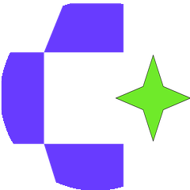

今 日 反 常 规
登 录 态 给 A I
2000
★ / 天
五 个 项 目 · 都 不 按 套 路
#01
JavaScript · B 半 可 用
citrolabs / ego-lite

把 登 录 过 的 浏 览 器 直 接 共 享 给 A I 编 程 助 手，让 它 替 你 跑 网 页 操 作
你 的 浏 览 器
→
A I 编 程 助 手
登 录 态 直 接 交 给 A I，人 在 旁 边 不 被 打 扰
#02
Shell · C 开 发 者 向
mattpocock / skills

T y p e S c r i p t 教 育 者 公 开 了 自 己 日 用 的 A I a g e n t 技 能 包，从 本 地 配 置 直 接 拿 出 来
大 佬 天 天 用 的 a g e n t 配 置，原 样 开 源 给 工 程 师
#03
TypeScript · A 普 通 可 用
CoreBunch / Instatic

自 托 管 的 可 视 化 建 站 系 统，拖 拽 生 成 静 态 网 页，用 户 角 色 插 件 数 据 库 全 自 带
A I a g e n t 还 能 直 接 参 与 建 站
100m80m60m40m20m
#04
Java · A 普 通 可 用
OtterMind / Chat2DB

A I 驱 动 的 数 据 库 客 户 端，连 几 十 种 主 流 数 据 库，自 然 语 言 问 数 据
问 一 句
昨 天 哪 个 仓 库 星 最 多
出 S Q L
SELECT ★ FROM repos
问 一 句 话，A I 直 接 写 S Q L
| 00| 25| 50| 75| 99
#05
Go · B 半 可 用
yorukot / superfile

终 端 里 好 看 的 文 件 管 理 器，界 面 现 代 精 致，在 命 令 行 里 用 图 形 化 方 式 管 文 件
命 令 行 也 能 这 么 好 看
今 日 五 个
你 最 想 试 哪 个？
关 注 我，天 天 更 新
关 注 我，天 天 更 新
GitHub 星 探 · 每 日 热 门